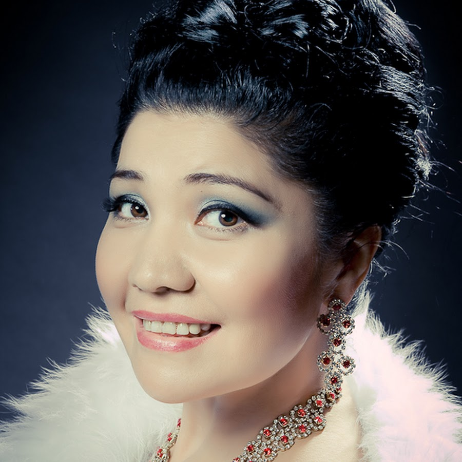

ТАЛАНТЛИВЫЕ СЕСТРЫ КУСМАНОВЫ

Кикенова (Кусманова) Алия Казкеновна и Бекжанова ( Кусманова) Куралай Казкеновна - уроженки села Грачи Бескарагайского района области Абай. Талантливые сестра Алия и Куралай, несмотря на занятость и плотный гастрольный график, стараются участвовать в культурной жизни родного района. Неоднократно участвовали на гала концертах «Туған жер – алтын бесігім», проводимых в рамках Дней культуры Бескарагайского района в городе Усть-Каменогорск.
КИКЕНОВА АЛИЯ КАЗКЕНОВНА
Известная оперная певица. В 1989 году закончила музыкальное училище имени М. Тулебаева по классу «Сольное пение». Окончила Ленинградскую Консерваторию имени Римского-Корсакова. Долгое время проживает в городе Санкт-Петербург, является ведущей оперной певицей театра. Оперная дива выступает с сольными концертами в Москве, Санкт-Петербурге, и других городах России. Концертирует в Казахстане, Украине, Италии и Швейцарии. Более 20 лет Алия Кикенова является культурным послом Казахстана в городе Санкт-Петербург.
БЕКЖАНОВА КУРАЛАЙ КАЗКЕНОВНА

Қазақ эстрадасының жұлдызы, танымал әнші. Құралайды тыңдарман қауым классикалық әндері арқылы танып, эстрада арқылы сүйсіне тыңдап келеді. Мектепті бітіргеннен кейін Семей қаласындағы Мұқан Төлебаев атындағы музыкалық колледжде, Алматы қаласының Құрманғазы атындағы консерваториясында оқып, Астана қаласында аспирантураны аяқтайды. Қазіргі уақытта Алматы қаласында тұрады, Т.Жүргенов атындағы Ұлттық Өнер академиясында жұмыс істейді. Құралай жұбайы Мираспен бірге классика, ария, романстар, халық әндерін орындайды. Сондай – ақ, репертуарларына қазақстандық сазгерлердің заманауи әндері де кірген. Мирас пен Құралай Бекжановтар Отандық эстрадада отбасылық дуэт ретінде танымал. Алматы қаласындағы «Мирас-Құралай» өнер студиясының негізін салушылары ретінде өнерлі, талантты жастардың шығармашылық тұрғыда өсуіне мүмкіндік береді. Репертуарында "Асыл жарым", "Туған жерім – алтын бесігім", "Ғажайып жаңдар", "Мөлдір сезім" және тағы басқа да әндері бар.